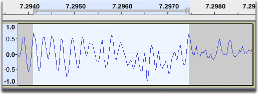
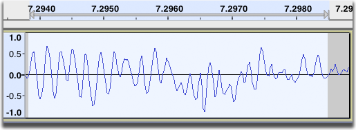

Select Menu: At Zero Crossings
Accessed by: or its Z shortcut.
At Zero Crossings Z
Moves the edges of a selection region (or the cursor position) very slightly to be at a rising zero crossing point. This is a point where a line joining the audio samples rises from left to right and crosses the zero horizontal line that represents silence.
The shift in audio position is not itself detectable to the ear, but the fact that the joins in the waveform are now of matching height helps avoid clicks when cutting or pasting audio.
- 
- 
This works very effectively on mono tracks as illustrated above. In stereo tracks, zero crossing points may occur at a different place in the left and right channels, so there may still be a click at the edit point in one channel. This can be solved by careful selection of edit points as explained in this FAQ.
| This feature does not necessarily find the nearest zero crossing to the current position. It aims to find the crossing where the average amplitude of samples in the vicinity is lowest. |